Release2026.10.16Lyrics & Music三条羽響
Release2026.10.16Lyrics & Music三条羽響
月日の奏
Prisméa
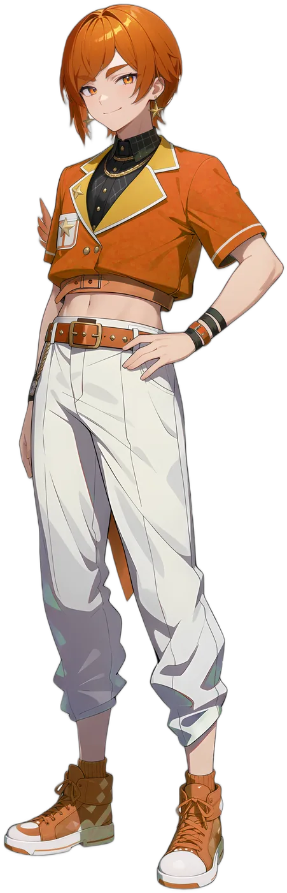
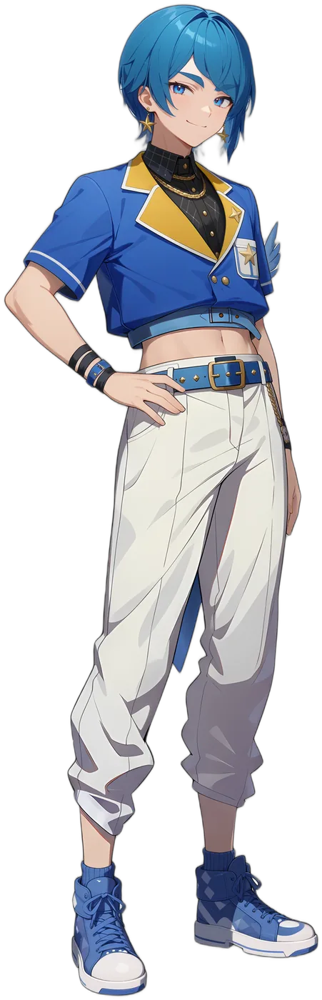
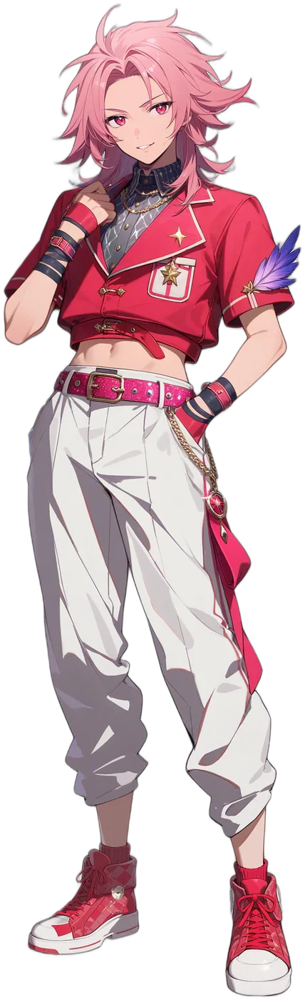

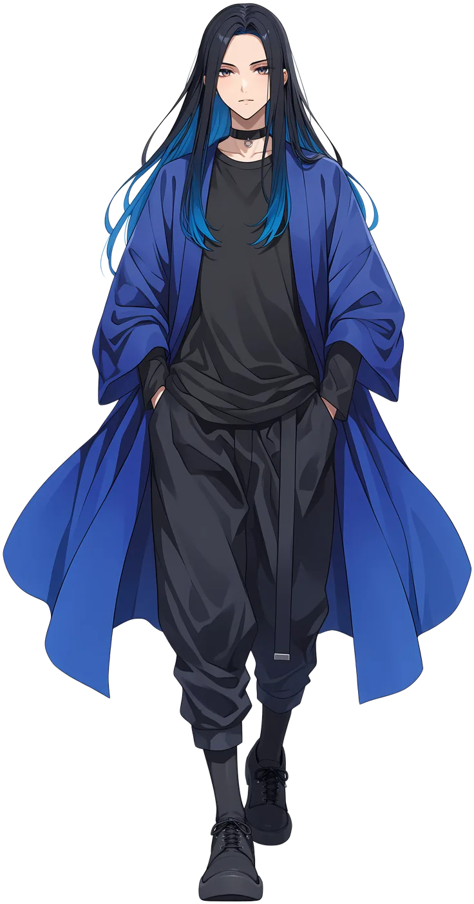
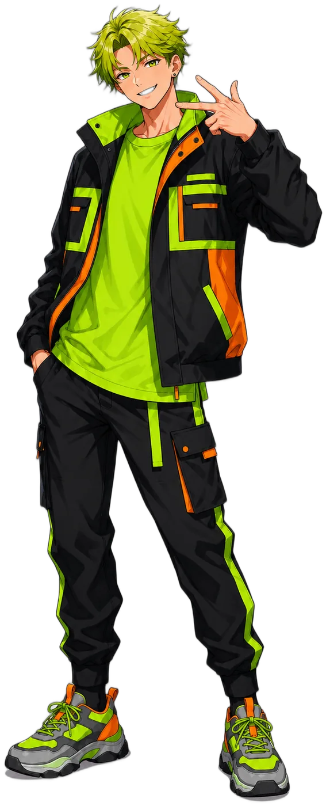
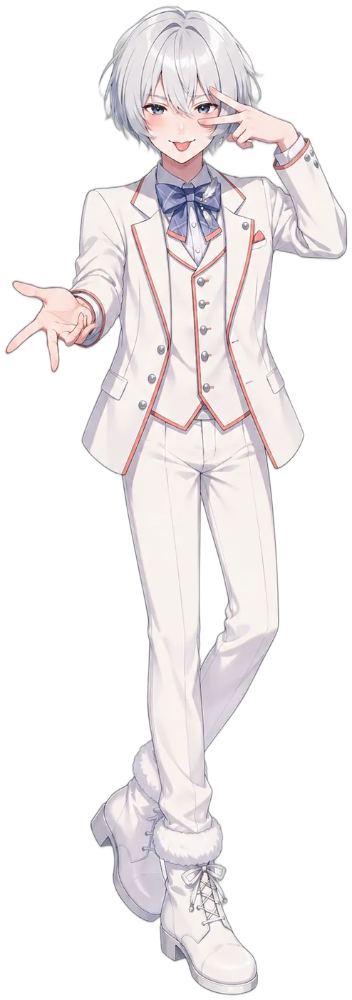
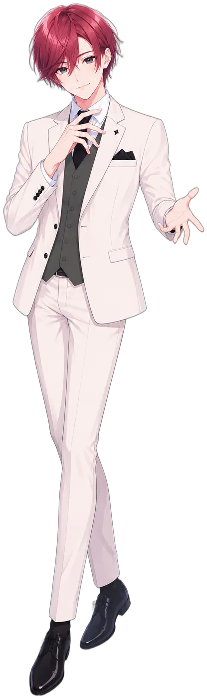
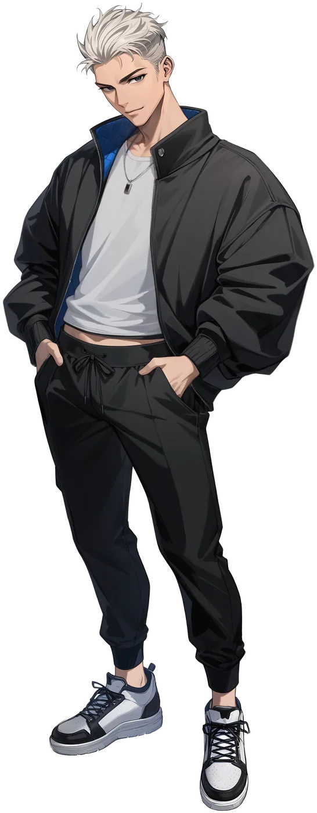
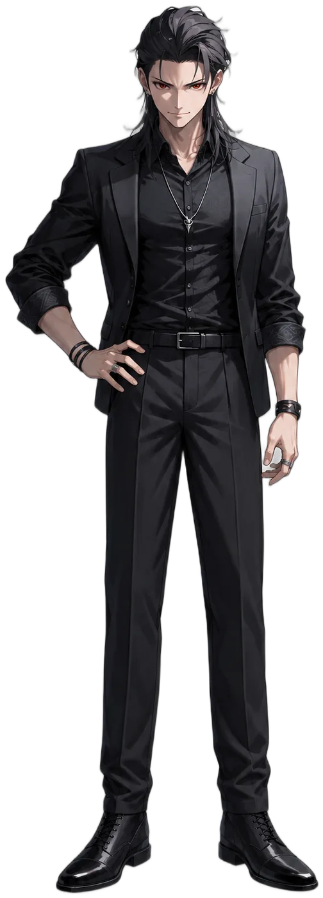
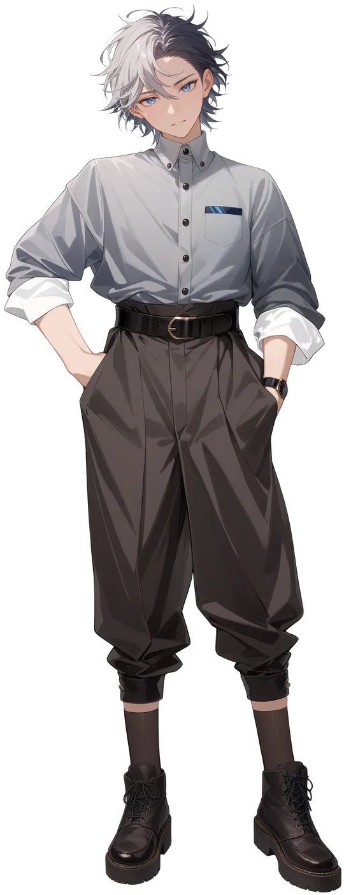
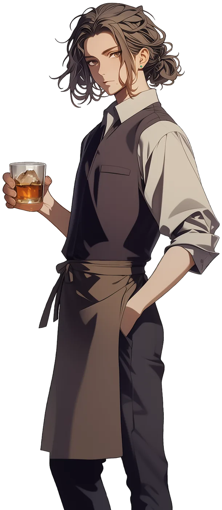

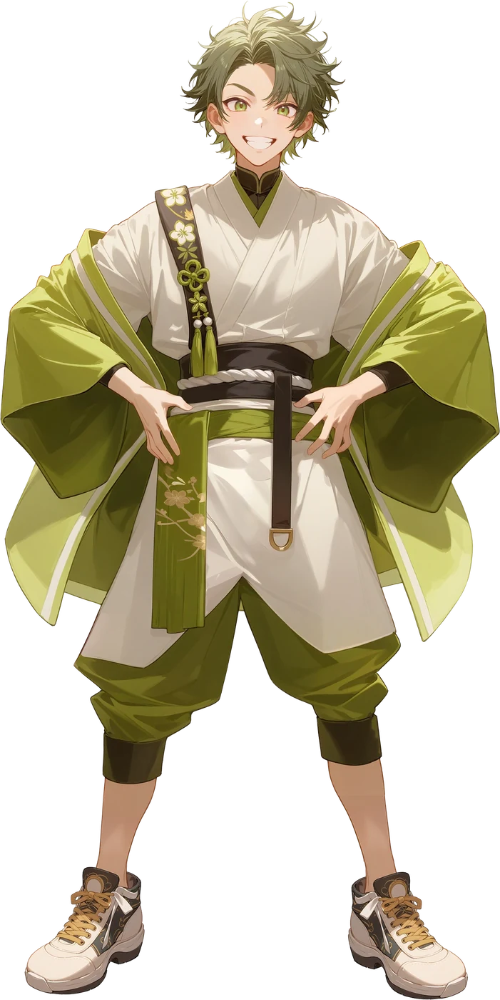
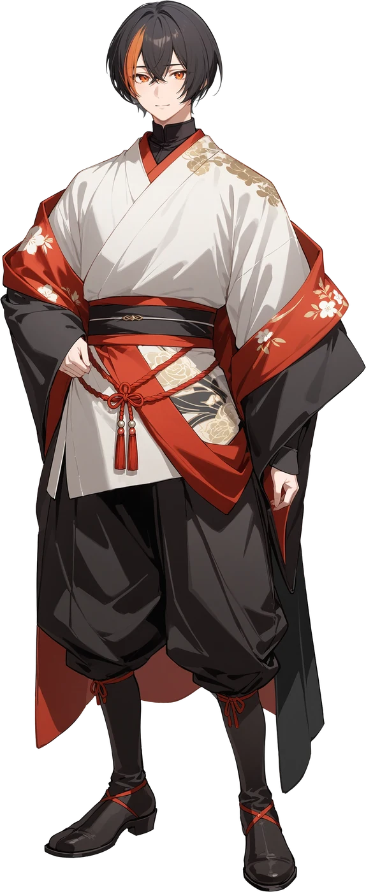

本能のまま、歌う。
 Pick Up
Pick Up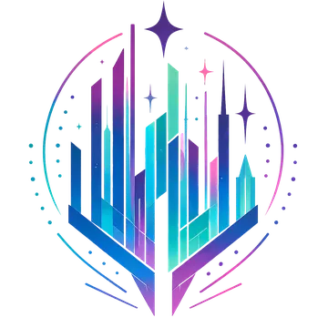
PrisméaMV月日の奏PrisméaNew Release
Release2026.10.16Lyrics & Music三条羽響
Prisméa
 Release2026.09.25Lyrics烏丸蓮司Music筧傑
Release2026.09.25Lyrics烏丸蓮司Music筧傑
Blackveil Harmonic
 Release2026.09.11Lyrics若本セインMusic三条羽響
Release2026.09.11Lyrics若本セインMusic三条羽響
Prisméa
 Release2026.08.22Lyrics & Music月嶺隼瞳
Release2026.08.22Lyrics & Music月嶺隼瞳
NocturnalFizz
 Release2026.08.12Lyrics川瀬帝翔Music燕谷航
Release2026.08.12Lyrics川瀬帝翔Music燕谷航
トリアティーク
 トリアティーク日本の身近な野鳥 × 和ロック
トリアティーク日本の身近な野鳥 × 和ロック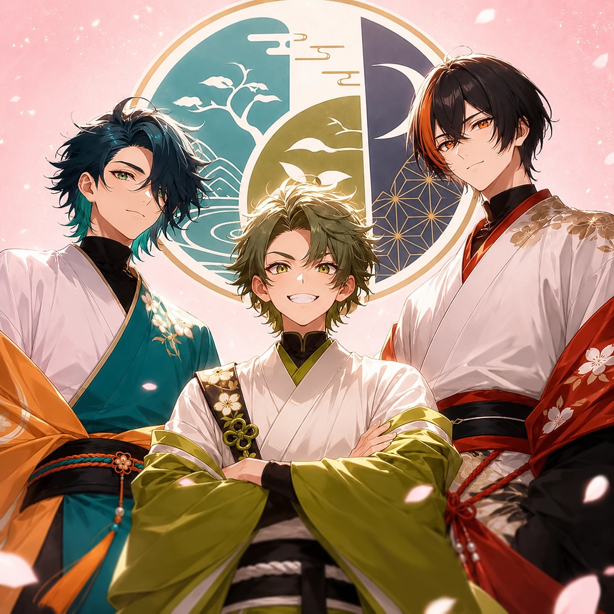
 NocturnalFizzノクターナルフィズ猛禽兄弟 × ジャズ
NocturnalFizzノクターナルフィズ猛禽兄弟 × ジャズ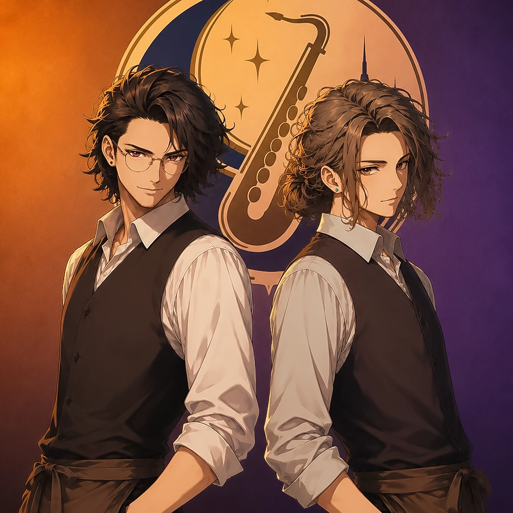
Prisméaプリズメアシティポップ・デュオ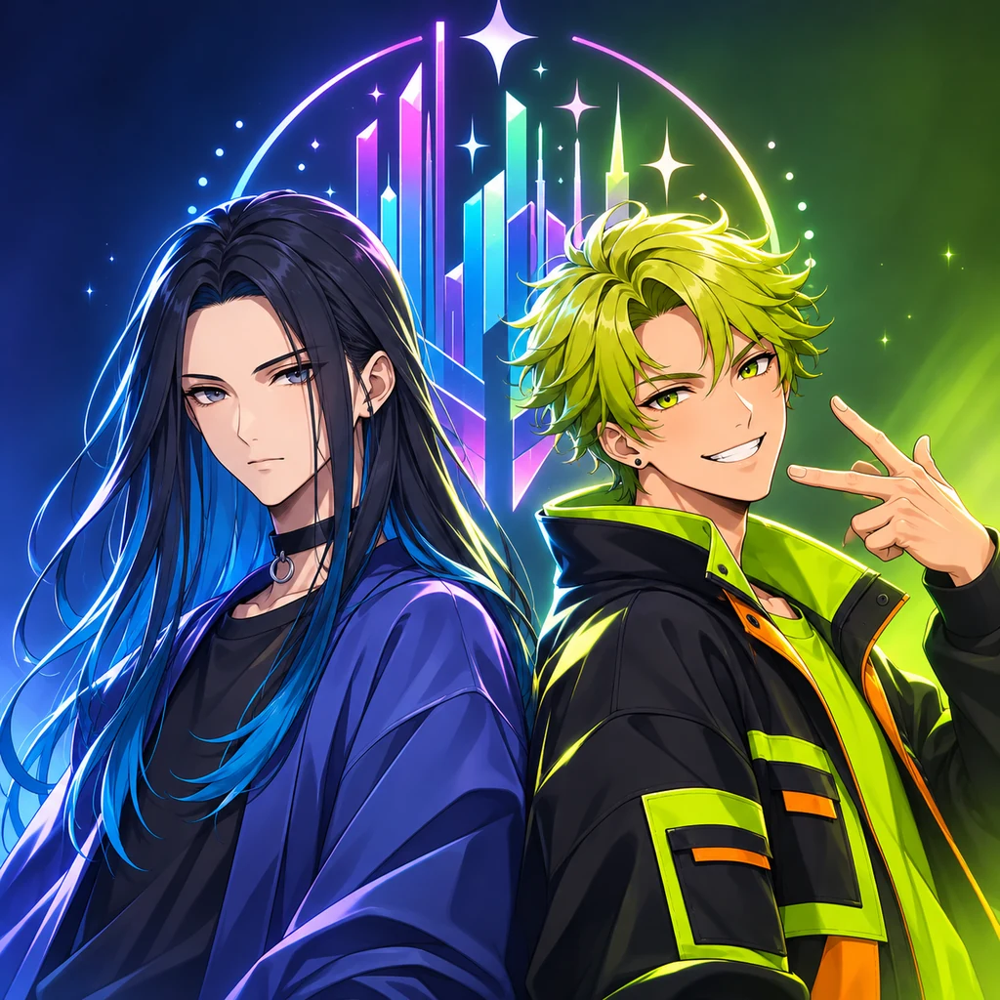
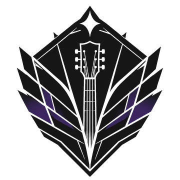
Blackveil Harmonicブラックヴェイル・ハーモニックカラスたちの宴 × ロック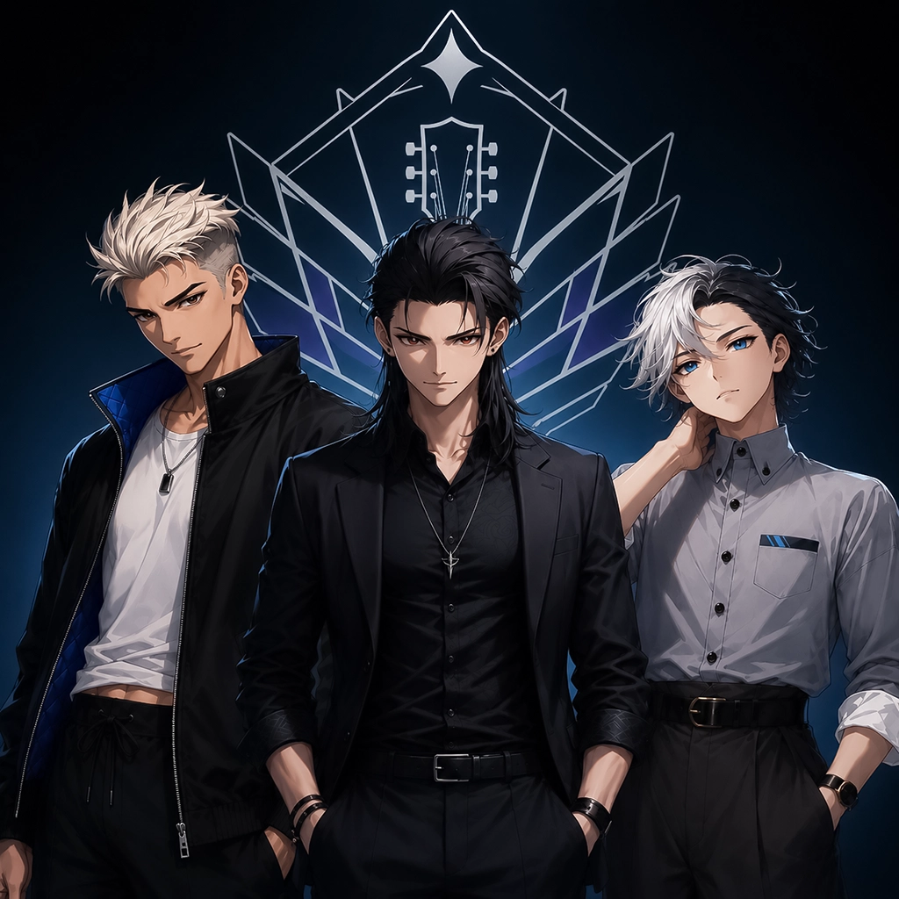
もし、
中の人の
歌も、
メンバーのモチーフになった野鳥たち
野鳥の
ソナヴィアンの
「ハミングハーツ」は、